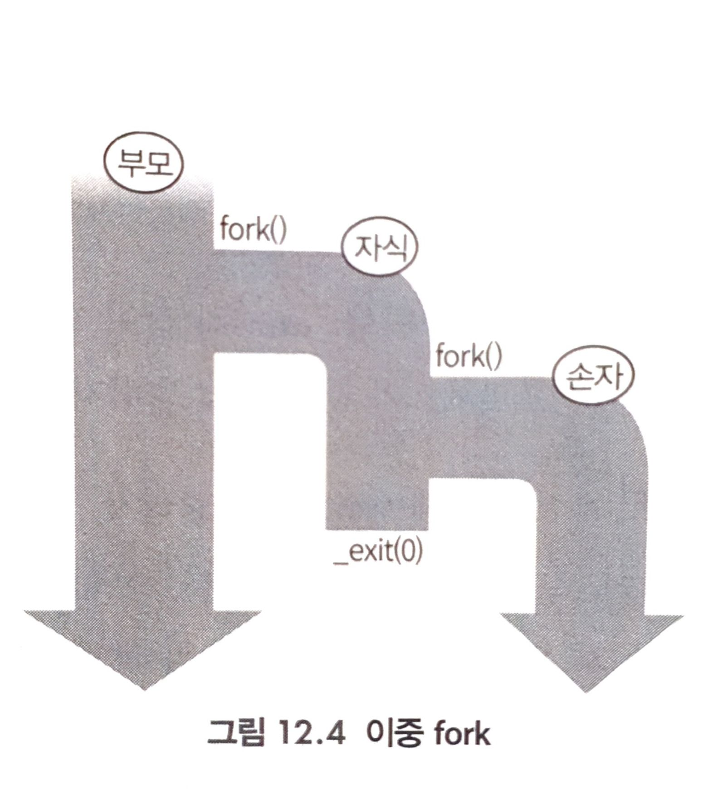

프로세스 API <2> 좀비프로세스 피하기, exit()
_exit():2
#include <unistd.h>
void _exit(int status);
- 기능: argument로 지정한 status를 종료 상태로 하여 종료한다. 절대 실패하지 않는다.
exit():3
#include <stdlib.h>
void exit(int status);
-
기능: argument로 지정한 status를 종료 상태로 하여 종료한다. 절대 실패하지 않는다.
- _exit() exit()의 차이
- exit()는 stdio버퍼를 전부 해제한다.
- exit()는 atexit()로 등록한 처리를 실행한다.
- 즉, exit()는 libc 함수이므로, libc와 관련된 각종 뒤처리를 수행한다.
- exit(0): 성공, exit(1): 실패는 UNIX에선 맞지만, 그 외 시스템에서는 다를 수도 있다.
- exit(EXIT_SUCCESS), exit(EXIT_FAILURE)라는 매크로를 사용하면 호환성이 좋다.
좀비 프로세스 피하는방법
- fork()시 parent가 wait
- 이중 fork()
- sigaction() 사용

- wait를 하는 권리는 직계 부모에게만 있다.
- 자식 프로세스가 없어지면, 손자 프로세스를 wait하는 권리를 가진 프로세스도 없어진다. 따라서, 커널도 손자 프로세스를 좀비로 두지 않고 종료하면 즉시 정리한다.
3번 sigaction은 추후 설명
wait():2
- child process를 기다리는데는 wait()나 waitpid()를 사용한다.
#include <sys/types.h>
#include <sys/wait.h>
pid_t wait(int *status);
pid_t waitpid(pid_t pid, int *status, int options);
wait(&status) == waitpid(-1, &status, 0); // 같은 기능
- wait()는 임의의 child 기다림 + 기다린 프로세스 정보 Get!!
- waitpid()는
pid 명시해 기다림 + 기다린 프로세스 정보 Get!! - wait는 child process가 종료될 때까지 호출한 프로세스는 중지된다.
- state 변화 정보를 얻는다.
- child process 종료, signal에 의한 stop, signal에 의한 resume…
- wait는 child process에 관련된 자원을 release 한다.
Parent의 wait가 동작하지 않으면, child process는 zomebie 프로세스가 된다. - child process가 이미 state가 바뀌었다면, wait는 즉시 리턴된다.
- wait(), waitpid() return
| 상황 | &status에 기록되는 값 | waitpid return 값 |
|---|---|---|
| child process 정상적 종료 |
WIFEXITED(status) = child process가 exit로 정상적 종료 시, 0이 아닌 값 WEXITSTATUS(status) = 하위 8bit 참조해 child process의 return 값 얻음 |
process ID |
| child process 비정상적종료 |
WIFSIGNAL(status) = 시그널로 종료 시, 0이 아닌 값 WTERMSIG(status) = 시그널로 종료했으면 시그널 번호를 반환! |
process ID |
| waitpid 함수 오류 | ECHILD: 호출 프로세스의 child process 미생성 EINTR: 시스템 콜이 인터럽트 되었음 |
-1 |
- pid_t waitpid(
pid_t pid, int *status, int options);
| waitpid의 pid real pid 아님! |
Description |
|---|---|
| pid < -1 | 프로세스 그룹 ID가 pid의 절댓값과 같은 자식 프로세스를 기다림 |
| -1 | 임의의 자식 프로세스를 기다림 |
| 0 | 호출 프로세스의 프로세스 그룹 PID와 같은 프로세스 그룹 ID를 가진 프로세스 기다림 |
| pid > 0 | 프로세스 ID가 pid인 자식 프로세스 기다림 기다릴 pid 명시 |
| options | Description |
|---|---|
| WCONTINUED | 중단되었다가 재개된 자식 프로세스의 상태 받음 |
| WNOHANG | 기다리는 PID가 종료되지 않아, 즉시 종료 상태를회수 할 수 없는 상황에서 호출한 프로세스는 차단되지 않고 반환 값으로 0을 얻음 |
| WUNTRACED | 중단된 자식 프로세스의 상태를 받음 |
simple fork 예제
#include <stdio.h>
#include <stdlib.h>
#include <unistd.h>
#include <sys/wait.h>
#include <errno.h>
#include <err.h>
#include <signal.h>
#define VERSION 1
static void child_fn(void){
printf("Hi,I'm child [PID:%d]\n",getpid()); // getpid()는 진짜 real PID 보여줌
exit(EXIT_SUCCESS);
}
int main(){
int ret=EXIT_FAILURE;
int i=0, ncreated=0;
int nproc=5; // How many child process will you made?
pid_t *pids=(pid_t*)malloc(nproc*sizeof(pid_t));
if(pids==NULL){
warn("malloc(pids) failed");
exit(ret);
}
for(i=0, ncreated=0; i<nproc;i++,ncreated++){
pids[i]=fork(); // fork()하면서 child pid가 pids[i]에 담김
if(pids[i]<0){
goto wait_children;
} else if(pids[i]==0){ // child의 pid_t 값은 0임
// child process
child_fn();
/* shouldn't reach here */
}
}
ret=EXIT_SUCCESS;
// parent
wait_children:
if(ret==EXIT_FAILURE)
for(i=0;i<ncreated;i++)
if(kill(pids[i],SIGINT)<0)
warn("kill(%d) failed\n",pids[i]);
for(i=0;i<ncreated;i++){
/*
* if(wait(NULL)<0)
* warn("wait() failed");
*
*/
int status;
pid_t ChildPid;
#if VERSION == 1
ChildPid=wait(&status);
#elif VERSION == 2
/* 에러 발생시 명시적으로 처리하고 wait */
while(((ChildPid=wait(&status))==-1)&&errno==EINTR); // 인터럽트로 비정상 종료시, 무한 루프로 다시 wait 건다
{
#endif
if(ChildPid<0){
printf("[ERROR] %d\n",errno);
perror("wait func error!");
} else {
if(WIFEXITED(status))
printf("wait: 자식 프로세스 정상 종료 %d\n",WEXITSTATUS(status));
else if(WIFSIGNALED(status))
printf("wait: 자식 프로세스 비정상 종료 %d\n",WTERMSIG(status));
}
#if VERSION == 2
}
#endif
}
free_pids:
printf("Original Process [PID:%d]!\n",getpid());
printf("pids free is done!\n");
free(pids);
exit(ret);
}
- getpid()으로 real pid 구할 수 있다.
- child의 real pid=parent의 real pid
+1
Copy on Write 방식의 fork()
- 할당 시, 가상 메모리 방식을 사용한다.
- 부모 프로세스의 메모리를 자식 프로세스에 전부 복사 X, 페이지 테이블만 복사하여 속도↑
- PTE(페이지 테이블 엔트리) 안에는 write권한을 나타내는 필드가 있다.
- PTE는 커널 메모리 영역에 있음
-
부모 자식도 전체 페이지에 write 권한 무효화한다.
- 부모 혹은 자식이 write 시도 시, 다음과 같이 공유 해제
- CPU에 페이지 폴트 발생
- CPU가 커널 모드로 변경되어 커널의 페이지 폴트 핸들러 동작
- 페이지 폴트 핸들러는 접근한 페이지를 다른 장소에 복사하고, write하려고 한 프로세스에 할당한 후 내용을 다시 작성
- 부모 프로세스, 자식 프로세스 각각 공유가 해제된 페이지에 대응하는 PTE 업데이트
- write한 프로세스 쪽에 엔트리는 새롭게 할당된 물리 페이지를 매핑해 write 허가
- 다른 쪽 프로세스의 엔트리에도 write허가
- 이후 공유가 해제된 페이지에는 각각 자유롭게 R/W 가능
Copy On Write 실험
- 100MB 메모리를 확보하여 모든 페이지에 접근
- 시스템의 메모리 사용량 확인
- fork() 시스템 콜 호출
- 부모 프로세스와 자식 프로세스가 각각 다음과 같은 동작을 한다.
- 부모 프로세스
- 자식 프로세스의 종료 기다림
- 자식 프로세스
- 시스템 메모리의 사용량과 자기 자신의 가상 메모리 사용량, 물리 메모리의 사용량, Major Fault의 횟수, Minor Fault 횟수 표시
- 위에서 획득한 영역 전부의 페이지에 접근
- 위 결과 횟수 표시
- 부모 프로세스
copy_on_write.c
#include <sys/types.h>
#include <sys/wait.h>
#include <unistd.h>
#include <sys/mman.h>
#include <stdio.h>
#include <stdlib.h>
#include <string.h>
#include <err.h>
#define BUFFER_SIZE (100*1024*1024)
#define PAGE_SIZE 4096
#define COMMAND_SIZE 4096
static char *p;
static char command[COMMAND_SIZE];
static void child_fn(char *p){
printf("*** child ps info before memory access ***:\n");
fflush(stdout);
snprintf(command,COMMAND_SIZE,"ps -o pid,comm,vsz,rss,min_flt,maj_flt | grep %d",getpid());
// shell cmd에 명령을 내리는 문자열
// vsz: 가상 메모리양
// rss: 확보된 물리 메모리양
system(command);
printf("*** free memory info before memory access ***:\n");
fflush(stdout);
system("free");
int i;
for(i=0;i<BUFFER_SIZE;i+=PAGE_SIZE)
p[i]=0;
printf("*** child ps info after memory access ***:\n");
fflush(stdout);
system(command);
printf("*** free memory info after memory access ***:\n");
fflush(stdout);
system("free");
exit(EXIT_SUCCESS);
}
static void parent_fn(void){
wait(NULL);
exit(EXIT_SUCCESS);
}
int main(void){
char* buf;
p=malloc(BUFFER_SIZE);
if(p==NULL)
err(EXIT_FAILURE,"malloc() failed");
int i;
for(i=0;i<BUFFER_SIZE;i+=PAGE_SIZE)
p[i]=0;
printf("*** free memory info before fork ***:\n");
fflush(stdout);
system("free");
pid_t ret;
ret=fork();
if(ret==-1)
err(EXIT_FAILURE,"fork() failed");
if(ret==0)
child_fn(p);
else
parent_fn();
err(EXIT_FAILURE,"shouldn't reach here");
}
#include <unistd.h>
pid_t fork(void);
- 기능: fork()는 프로세스 자신을 복제해서 새로운 프로세스를 만드는 시스템 콜
- parent process: 원래 존재하는 프로세스
- child process: parent process에서 복제되어 만들어진 프로세스
| return | value |
|---|---|
| 성공 | Parent process get 0 |
| 실패 | Parent process get -1 |
exec():2
- exec는
새로운 프로세스 호출덮어씌워짐- exec를호출하면, 그 시점에서 실행 중인 프로그램 소멸 후 새로운 프로그램 로드
#include <unistd.h>
int execl(const char *path, const char *arg, ... /* NULL */);
int execlp(const char *program, const char *arg, ... /* NULL */);
int execle(const char *path, const char *arg, ..., /* NULL, */ char * const envp[]);
int execlv(const char *path, char * const argv[]);
int execvp(const char *program, char * const argv[]);
int execve(const char *path, char * const argv[], char * const envp[]);
- UNIX: execve()만 시스템 콜, 나머지는 라이브러리 함수
- API 이름 뒷 부분에
l(list)가 붙은 경우는 argument를 가변 인자로 전달, 마지막 NULL - API 이름 뒷 부분에
v(vector)가 붙은 경우는 argument를 문자열 배열로 전달, 마지막 NULL- 1, 2번 째 인자에는 프로그램 이름 중복
execl("/bin/cat", "cat", "hello.c", NULL);
char *argv[3]={ "cat", "hello.c", NULL);
execv("bin/cat", argv);
- API 이름 뒷 부분에
e가 붙은 경우, 환경변수인 envp가 추가된다.
e가 붙지 않은 경우, 현재 프로세스 환경 변수 그대로 사용 - API 이름 뒷 부분에
p가 붙은 경우, $PATH에서 프로그램을 찾는다.
p가 붙지 않은 경우, 프로세스를 절대 경로 또는 상대 경로로 지정해야 한다. - exec는 성공하면 호출이 돌아오지 않기 때문에 호출이 돌아온 경우는 언제나 실패했음을 의미한다.
실패했을 때는 -1을 반환하고 errno에 에러 번호가 설정한다.
세 가지를 다 써보는 예제
#include <stdio.h>
#include <stdlib.h>
#include <unistd.h>
#include <sys/types.h>
#include <sys/wait.h>
int main(int argc, char *argv[]){
pid_t pid;
if(argc!=3){
fprintf(stderr, "Usage: %s <command> <arg>\n",argv[0]);
exit(1);
}
pid=fork();
if(pid<0){
/* error occured */
fprintf(stderr, "fork(2) failed\n");
exit(1);
}
if(pid==0){
/* child process */
execl(argv[1], argv[1], argv[2], NULL);
/* Shouldn't reach here */
perror(argv[1]);
exit(99);
}
else {
/* parents process */
int status;
waitpid(pid, &status, 0);
printf("child (PID=%d) finished; ", pid);
if(WIFEXITED(status))
printf("exit, status=%d\n", WEXITSTATUS(status));
else if(WIFSIGNALED(status))
printf("signal, sig=%d\n", WTERMSIG(status));
else
printf("abnormal exit\n");
exit(0);
}
}
$ gcc -g -Wall spawn.c -o spawn
$ ./spawn /bin/echo OK
OK
child (PID=20092) finished; exit,status=0
# 만약 존재하지 않는 프로그램을 실행 한다면?
$ ./spawn /usr/bin/notexist xxx
/usr/bin/notexist: No Such file or directory
child (PID=20339) finished; exit, status=99
- fork()한다.
- child에서 새로운 프로세스 exec
- parent는 wait
- execl로 실행된 프로세스가 exit하며 return 값을 wait에 반환한다.